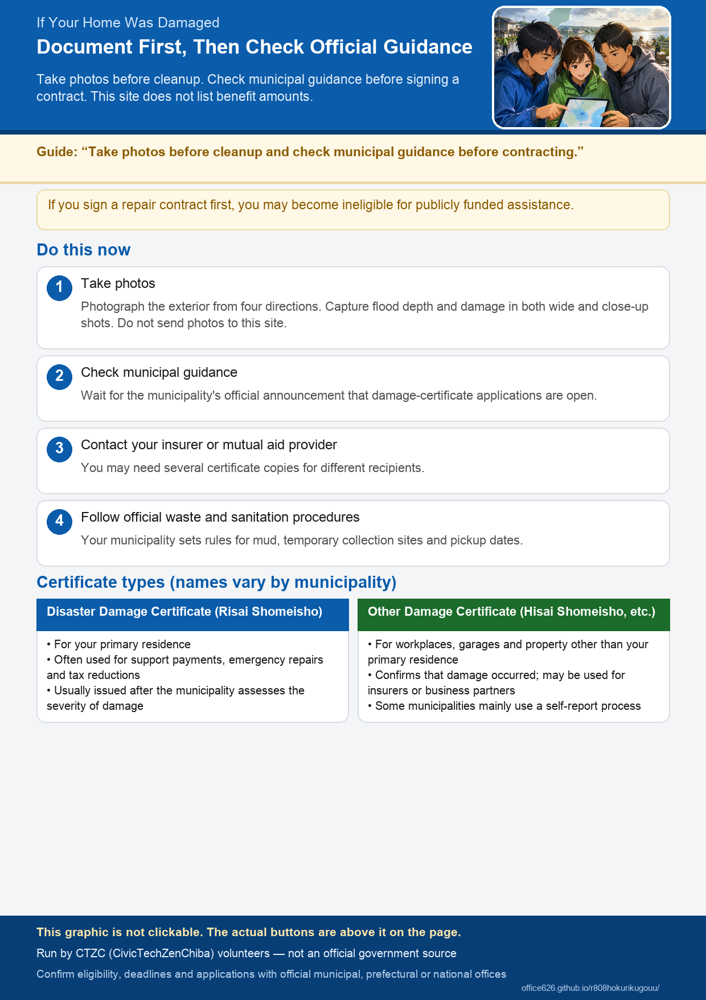

If Your Home Was Damaged
This site is volunteer-run and is not an application office. Check official municipal, prefectural, and national sources for eligibility, periods, amounts, and application opening dates. Each administering organization makes the final eligibility decision.
What to Do Right Now
Document the damage before cleaning or repairing. Do not send your photos to this website.
- Take photos that clearly show the damage. Photograph the building from all four sides if possible. For flood depth and damaged areas, take both wide shots that show the whole area and close-ups that show details.
- Before signing a contract, read your municipality's guidance on disaster damage certificates. If you contract and pay for work first, you may later be ineligible for public assistance.
- Contact your insurer or mutual aid provider. You may need several certificate copies for separate claims involving fire, flood, vehicles, and other losses.
- Follow official procedures for infection control and disaster waste. Your municipality provides instructions for sewage-contaminated mud, temporary waste sites, and collection dates.
- Keep every receipt. Keep receipts for cleanup tools, cleaning and repair contractors, accommodation, moving, and replacement household goods. You may need them for insurance claims, emergency repair reimbursement, and next year's tax return, including casualty loss deductions. Once discarded, they cannot be recovered.
See upcoming problems and deadlines by stage
- First steps when your home has been damaged (Government Public Relations Online) Government
- Support for disaster victims and damage assessment (Cabinet Office) Government
- Preventing infection in disaster-damaged homes (Ministry of Health, Labour and Welfare) Government
- Disaster waste information (Ministry of the Environment; see your municipality for disposal instructions) Government
Difference Between the Two Types of Damage Certificate
Names may differ slightly by municipality. Apply to the municipality where you live, and check its official guidance to determine which document you need.
| Risai Shomeisho (Disaster Damage Certificate) | Hisai Shomeisho (Proof of Damage / Damage Report) | |
|---|---|---|
| Main coverage | Your primary residence, such as your home | Business premises, garages, parking areas, and other buildings or property that are not your primary residence |
| Typical uses | Support payments, emergency repairs, temporary housing, tax reductions, insurance, and other programs; check each program | Proof that damage occurred, for submission to insurers, business partners, and others |
| Assessment | Often issued after the municipality assesses the level of damage | Some municipalities mainly accept a report from the applicant; confirm the official document category |
If your home was damaged but you apply only for a garage, the certificate may not be usable for housing support. Conversely, damage to a shop or garage may not qualify for a residential disaster damage certificate.
Important Precautions
- Repairing first may make you ineligible for assistance. Wanting to restore daily life quickly is understandable. If you hope to use public assistance, it is safer to document the damage and confirm through official sources that municipal applications are open before proceeding. Each program makes its own eligibility decision.
- The amount available depends on the damage category. Categories such as complete or partial destruction are determined through assessment. This site does not list amounts; check the latest official Cabinet Office, prefectural, and municipal information.
- Watch for disaster-related scams and claims of “free repairs with insurance money.” Authorities have warned about pressure to sign quickly and large charges disguised as inspections.
- Some municipalities are still preparing to accept applications. While assessments are underway, the opening date for the application desk may not yet have been announced.
- Beware of dishonest sales practices exploiting disasters (Consumer Affairs Agency) Government
- Caution about contracts advertising free repairs using insurance payouts (Consumer Affairs Agency) Government
Health and Electrical Safety During Cleanup
- Heatstroke: Removing mud in August is strenuous. Work in the early morning or evening, drink water and replace salt, take frequent breaks, and do not work alone.
- Injury and tetanus: Mud may hide nails and glass. Wear boots, heavy gloves, and a mask. Seek medical care for deep or dirty wounds.
- Under floors, remove mud and dry the area before disinfecting. Failure to dry it can later cause mold, odors, and timber damage. Follow official instructions when using hydrated lime or similar products.
- Have flooded appliances, outlets, and breaker panels inspected before restoring power. Water or mud left inside can later cause leakage current or fire. Before raising the breaker after an outage, unplug appliances and check that no flammable items are nearby. Never use a generator indoors.
- Heat Illness Prevention Information (Ministry of the Environment) Government
- Preventing heatstroke (Ministry of Health, Labour and Welfare) Government
- Infection prevention, disinfection, and injuries in damaged homes (Ministry of Health, Labour and Welfare) Government
- Fire hazards from flooded electrical appliances (NITE) Government
- Kanto Electrical Safety Inspection Association (electrical inspection advice) Official
If Your Car Was Flooded
- Do not start the engine. The electrical system may short-circuit or catch fire. Ask the dealer, a repair shop, or roadside assistance before moving it.
- Take photos and contact your insurer. Comprehensive auto insurance may cover flood damage; ask your insurer about your policy.
- Complete deregistration procedures if scrapping the car. Depending on the municipality, vehicle damage may require proof of damage rather than a residential disaster damage certificate.
- About automobile insurance (General Insurance Association of Japan) Official
- JAF (roadside assistance and flooded-vehicle precautions) Official
Updates from Disaster-Relief NPOs and Support Organizations in Hokuriku
These non-government organizations provide guidance on home cleanup and rebuilding daily life. This site does not register on-site volunteers. Ask the relevant Council of Social Welfare disaster volunteer center whether volunteers are being accepted.
- National Council of Social Welfare: Disaster-Area Support and Volunteer Information Council of Social Welfare Opening status of disaster volunteer centers.
- Disaster Volunteer Activity Support Project Council (Support P) Coordination
- National Network Connected by Earthquakes: “When Your Home Is Flooded” NPO A 2025-revised guide to photographs, drying, mold, and recovery after flooding.
- JVOAD: Flood guide added to its resource collection NPO
- Civic Tech Sodegaura Disaster Support Navigator Civic tech Answer questions to find possible programs; Sodegaura City version.
- Matsudo NPO Council NPO A CVOAD member supporting civic activities around Matsudo.
- CivicTechZenHokuriku (CTZC) Civic tech The organization operating this website.
Briefings, Consultation Sessions, and Seminars
These events were advertised online as of August 16, 2026. Dates may already have passed. Confirm eligibility and cancellations with the organizer. This site does not list monetary amounts.
More may be announced. Places to check include:
- Municipality pages on this site for official notices
- National Council of Social Welfare disaster volunteer information, which may post explanations when centers open
What Comes Next: Steps Toward Rebuilding Your Life
The general process is similar, but progress differs by municipality.
- Document the damage with photos, and check with your insurer and municipality.
- The municipality assesses the damage. This is often handled by a department involved in taxation or housing valuation.
- Disaster damage certificates and related documents are issued.
- Choose between emergency repairs and emergency temporary housing, which may include rent assistance for a private apartment. Check official eligibility rules and periods for both.
- Apply for disaster victim livelihood recovery support and other assistance; official categories and requirements apply.
- Public support programs, including livelihood recovery payments and emergency repairs (Cabinet Office) Government
- Prefectural and national support information on this site
In municipalities covered by the Disaster Relief Act, detailed assistance may become available for shelter operation, school supplies, and other needs in addition to emergency repairs and temporary housing. Check prefectural and municipal sources for available programs and opening dates.
Travel, utilities, and shopping information / Information for affected shops, factories, and other businesses
